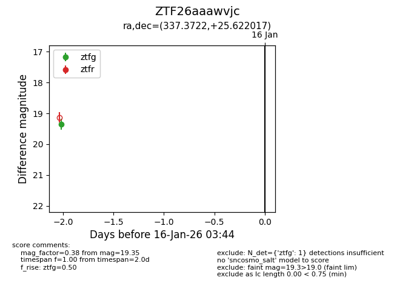
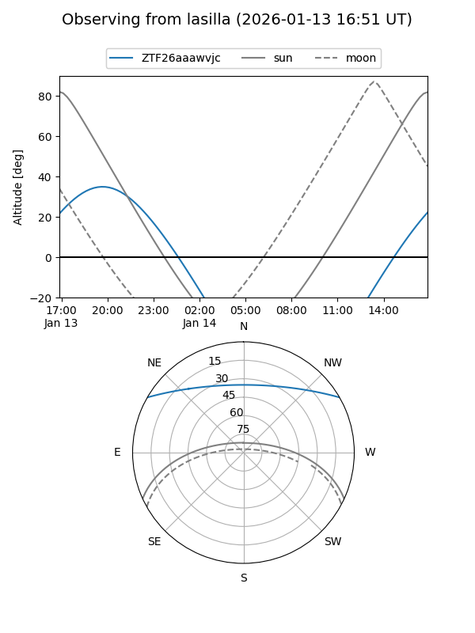
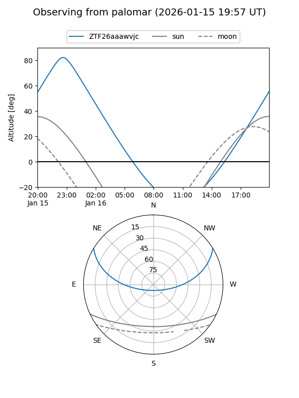

ZTF26aaawvjc
Target ZTF26aaawvjc at 2026-01-14 03:39
Aliases and brokers:
FINK: link
Lasair: link
ALeRCE: link
alt names
ZTF26aaawvjc (ztf,fink_ztf)
Coordinates:
equatorial (ra, dec) = 337.3722,+25.62202
equatorial (HMS+DMS) = 22:29:29.32,+25:37:19.26
galactic (l, b) = (86.9010,-27.14386)
Flags:
Photometry:
last ztfg=19.35
1 ztfg detections
Lightcurve

Visibility


Additional plots